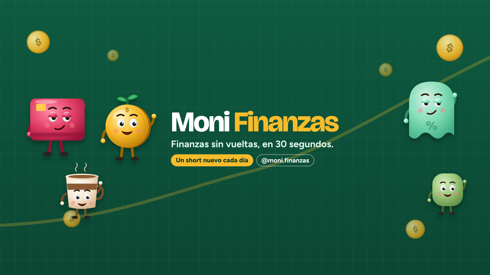
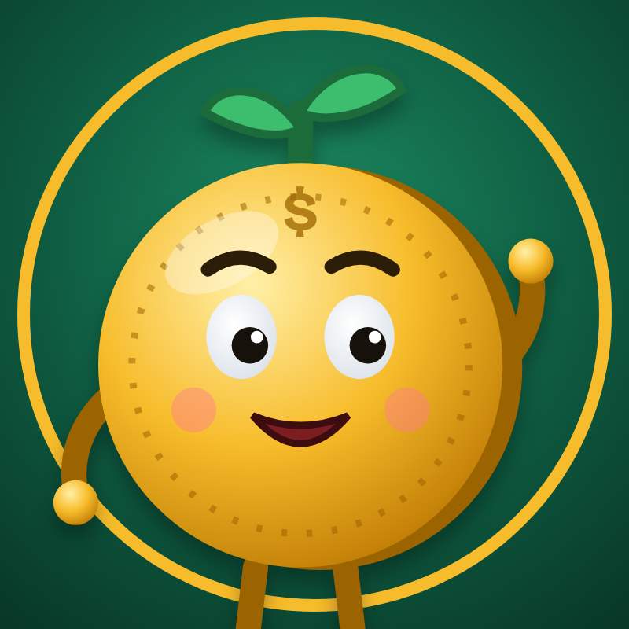
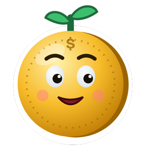
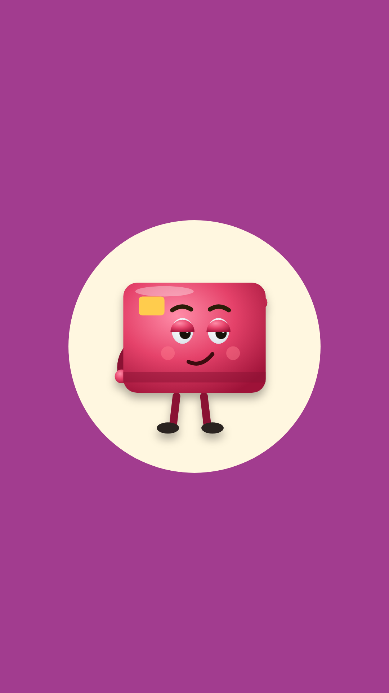
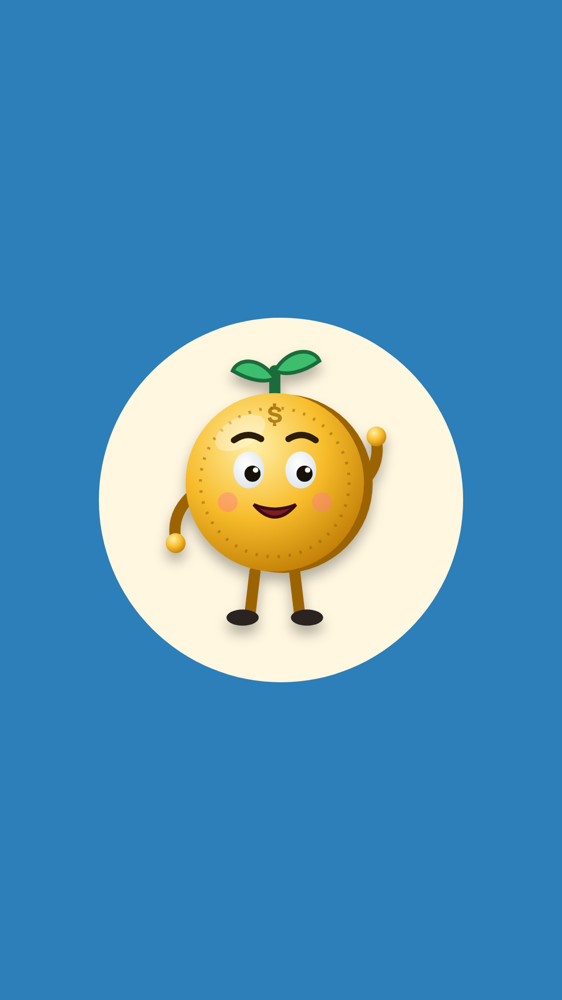
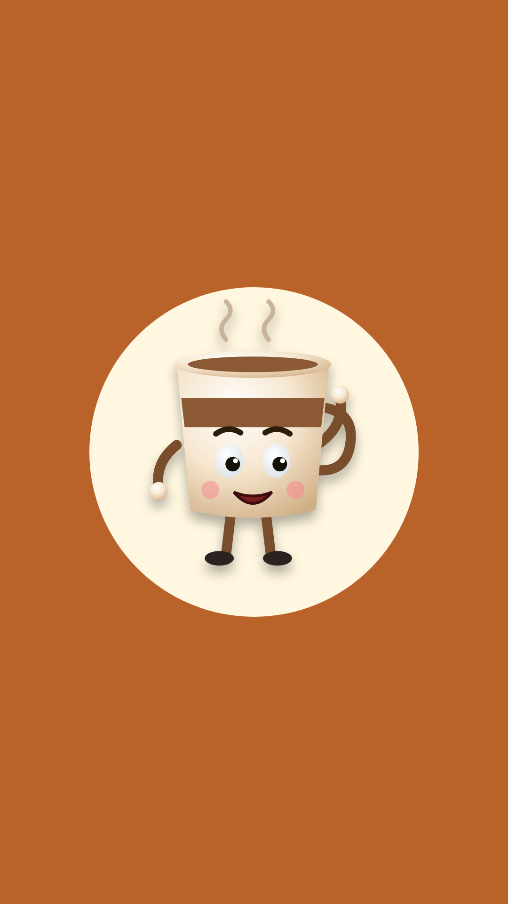
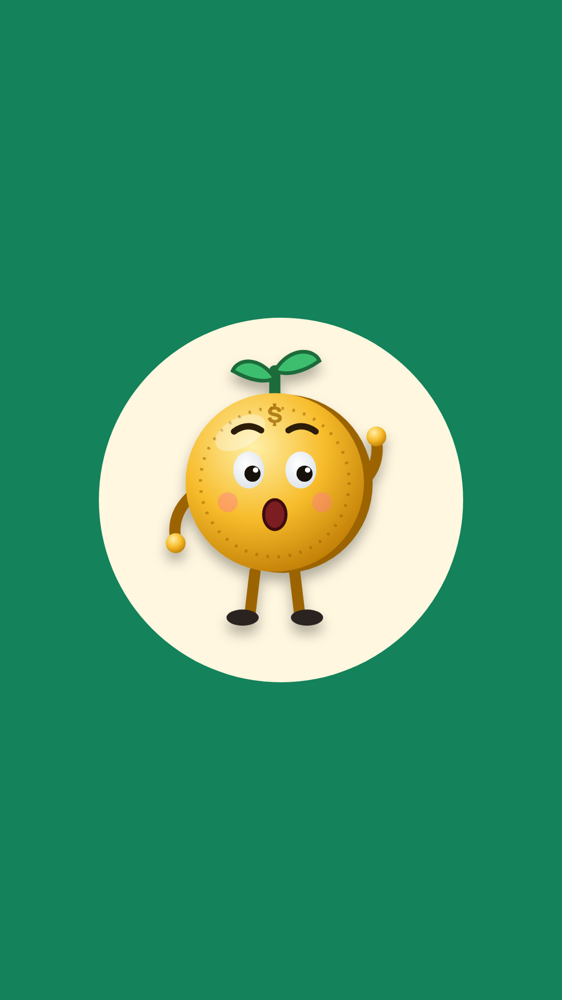
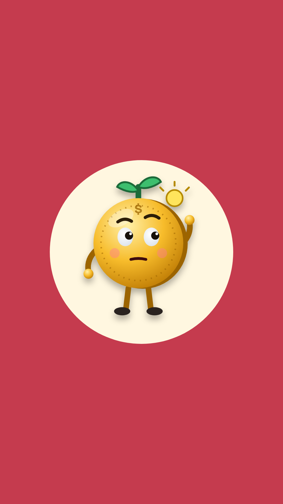

<title>Kit de marca Moni Finanzas</title>
<meta name="claude:viewport-fit-sides" content="cover">
<link rel="preconnect" href="https://fonts.googleapis.com">
<link rel="stylesheet" href="https://fonts.googleapis.com/css2?family=Bricolage+Grotesque:opsz,wght@12..96,700;12..96,800&family=Figtree:wght@400;500;600;700&display=swap">
<style>
/* Layout: kit de marca — encabezado verde con el banner, luego una sección por red social con sus piezas y textos listos para copiar. */
:root{
  --bg:#EEF2EF; --surface:#FFFFFF; --ink:#14221D; --muted:#56675F; --line:#D3DDD7; --soft:#F5F8F6;
  --brand:#0E5A40; --gold:#F2B12A; --gold-ink:#7A5200; --ok:#17865A;
  --f-display:"Bricolage Grotesque","Avenir Next",system-ui,sans-serif;
  --f-body:"Figtree","Segoe UI",system-ui,sans-serif;
}
@media (prefers-color-scheme: dark){:root:not([data-theme="light"]){
  --bg:#0E1613; --surface:#16211D; --ink:#E6EEEA; --muted:#97A9A1; --line:#2A3833; --soft:#1B2823;
  --brand:#0B3D2E; --gold:#F5BE45; --gold-ink:#FFD77A; --ok:#43C98C; color-scheme:dark}}
:root[data-theme="dark"]{
  --bg:#0E1613; --surface:#16211D; --ink:#E6EEEA; --muted:#97A9A1; --line:#2A3833; --soft:#1B2823;
  --brand:#0B3D2E; --gold:#F5BE45; --gold-ink:#FFD77A; --ok:#43C98C; color-scheme:dark}
*{box-sizing:border-box}
body{background:var(--bg);color:var(--ink);font-family:var(--f-body);font-size:16px;line-height:1.55;margin:0;padding-block:0 64px}
.in{max-width:1080px;margin:0 auto;padding-left:max(16px,env(safe-area-inset-left,0px));padding-right:max(16px,env(safe-area-inset-right,0px))}
h1,h2,h3{font-family:var(--f-display);margin:0;line-height:1.1;text-wrap:balance}
h1{font-size:clamp(36px,6vw,60px);font-weight:800;letter-spacing:-.03em;color:#fff}
h1 span{color:#F7BC2B}
h2{font-size:28px;font-weight:800;letter-spacing:-.01em}
h3{font-size:18px;font-weight:700}
p{margin:0}
.eyebrow{font-size:12px;font-weight:700;letter-spacing:.12em;text-transform:uppercase;color:var(--muted)}
.hero{background:var(--brand);margin-top:calc(-1 * env(safe-area-inset-top,0px));padding-top:calc(env(safe-area-inset-top,0px) + 40px);padding-bottom:36px}
.hero .in{display:grid;gap:14px}
.hero .eyebrow{color:#BFE3D2}
.hero p.lede{color:#DDF3E8;max-width:62ch;font-size:17px}
.banner{width:100%;border-radius:14px;display:block;max-width:100%;margin-top:10px}
main{display:grid;gap:44px;padding-top:36px}
section{display:grid;gap:18px}
.two{display:grid;grid-template-columns:repeat(2,minmax(0,1fr));gap:18px}
.box{background:var(--surface);border:1px solid var(--line);border-radius:16px;padding:20px;display:grid;gap:12px;align-content:start;min-width:0}
.box p{color:var(--muted)}
.pick{border:2px solid var(--ok)}
.tag{justify-self:start;font-size:12px;font-weight:700;letter-spacing:.06em;text-transform:uppercase;padding:3px 10px;border-radius:999px;background:color-mix(in srgb,var(--ok) 16%,transparent);color:var(--ok)}
ul{margin:0;padding-left:20px;color:var(--muted)}
li{margin-bottom:4px}
.assets{display:grid;grid-template-columns:repeat(auto-fill,minmax(150px,1fr));gap:14px}
.asset{display:grid;gap:6px;font-size:13px;color:var(--muted)}
.asset img{width:100%;border-radius:12px;border:1px solid var(--line);background:var(--soft)}
.asset img.round{border-radius:50%}
.asset img.tall{aspect-ratio:9/16;object-fit:cover}
.asset b{color:var(--ink);font-size:14px}
.field{display:grid;gap:6px}
.field .head{display:flex;justify-content:space-between;align-items:baseline;gap:10px}
.field .count{font-size:12px;color:var(--muted);font-variant-numeric:tabular-nums}
.field .count.over{color:#C53B4E;font-weight:700}
.txt{white-space:pre-wrap;background:var(--soft);border:1px solid var(--line);border-radius:12px;padding:12px 14px;font-size:15px;overflow-wrap:anywhere}
.copy{justify-self:start;border:1px solid var(--line);background:var(--surface);color:var(--ink);border-radius:999px;padding:6px 14px;font:700 13px var(--f-body);cursor:pointer}
.copy:focus-visible{outline:3px solid var(--gold);outline-offset:2px}
.check li{color:var(--ink)}
.check li span{color:var(--muted)}
@media (max-width:760px){.two{grid-template-columns:minmax(0,1fr)}}
</style>

<header class="hero"><div class="in">
  <p class="eyebrow">Kit de marca · YouTube, Instagram y TikTok</p>
  <h1>Moni <span>Finanzas</span></h1>
  <p class="lede">Nombre, usuario, foto de perfil, banner y textos listos para copiar. El usuario <b>@moni.finanzas</b> ya está en la marca de agua de los 100 videos, así que con este nombre no hay que volver a renderizar nada.</p>
  
</div></header>

<main class="in">

<section>
  <p class="eyebrow">Primera decisión</p>
  <h2>¿Cuenta nueva o tu canal de finanzas?</h2>
  <div class="two">
    <div class="box pick">
      <span class="tag">Recomendado</span>
      <h3>Canal nuevo dentro de tu misma cuenta de Google</h3>
      <p>En YouTube, desde Configuración → “Agregar o administrar tus canales” → “Crear un canal”. Lo manejás con el mismo login, pero es otro canal con su propio público.</p>
      <ul>
        <li>El algoritmo aprende quién mira cada canal. Mezclar videos animados con tus videos hablando a cámara confunde esa señal y baja el alcance de los dos.</li>
        <li>Tu canal personal no corre riesgos si YouTube cambia sus reglas sobre contenido animado con IA.</li>
        <li>Podés promocionar uno desde el otro: links cruzados y menciones.</li>
      </ul>
    </div>
    <div class="box">
      <h3>Instagram y TikTok: cuentas nuevas</h3>
      <p>Las dos apps permiten tener varias cuentas en el mismo teléfono y cambiar entre ellas sin cerrar sesión.</p>
      <ul>
        <li>Instagram: tu perfil → nombre de usuario arriba → “Agregar cuenta”. Elegí cuenta de creador, categoría Educación.</li>
        <li>TikTok: Perfil → nombre de usuario arriba → “Agregar cuenta”.</li>
        <li>En tu canal personal, poné un link a Moni Finanzas en la bio.</li>
      </ul>
    </div>
  </div>
</section>

<section>
  <p class="eyebrow">Nombre</p>
  <h2>Moni Finanzas · @moni.finanzas</h2>
  <div class="two">
    <div class="box">
      <h3>Por qué este nombre</h3>
      <ul>
        <li>Dice quién es y de qué trata: el personaje y el tema.</li>
        <li>Se busca fácil y funciona en todos los países hispanohablantes.</li>
        <li>Coincide con la marca de agua que ya tienen los 100 videos.</li>
      </ul>
    </div>
    <div class="box">
      <h3>Si el usuario está ocupado</h3>
      <p>No pude comprobar si está libre en cada red. Probá en este orden y avisame cuál quedó para actualizar la marca de agua:</p>
      <ul>
        <li>@moni.finanzas</li>
        <li>@monifinanzas</li>
        <li>@soy.moni.finanzas</li>
        <li>@moni.plata</li>
      </ul>
    </div>
  </div>
</section>

<section>
  <p class="eyebrow">Piezas gráficas</p>
  <h2>Logo, banner y portadas</h2>
  <div class="assets">
    <div class="asset"><b>Foto de perfil</b>logo_800.png · las 3 redes</div>
    <div class="asset"><b>Marca de agua</b>marca_de_agua_300.png · YouTube</div>
    <div class="asset"><b>Destacado</b>Telenovela</div>
    <div class="asset"><b>Destacado</b>Pizarra</div>
    <div class="asset"><b>Destacado</b>Gastos hormiga</div>
    <div class="asset"><b>Destacado</b>¿Y si…?</div>
    <div class="asset"><b>Destacado</b>Mito o verdad</div>
  </div>
  <p class="eyebrow" style="text-transform:none;letter-spacing:0;font-weight:500">Los archivos en tamaño real te los mandé aparte. El banner respeta la zona segura de YouTube (1546 × 423 px en el centro), así que el nombre se lee en celular, computadora y TV.</p>
</section>

<section>
  <p class="eyebrow">YouTube</p>
  <h2>Textos del canal</h2>
  <div class="box">
    <div class="field"><div class="head"><h3>Nombre</h3></div><div class="txt" id="yt-name">Moni Finanzas</div><button class="copy" data-c="yt-name">Copiar</button></div>
    <div class="field"><div class="head"><h3>Descripción</h3><span class="count" data-max="1000" data-for="yt-desc"></span></div><div class="txt" id="yt-desc">Finanzas sin vueltas, en 30 segundos. 🪙

Soy Moni, una moneda con un brote en la cabeza: la plata que se cuida, crece. Cada día subo un short animado para entender tu plata: tarjetas, deudas, ahorro, inflación, inversiones y los gastos hormiga que se comen tu sueldo.

📺 Series del canal
• Telenovela del dinero: Moni contra Tarjetín, la Inflación y el Préstamo Fácil.
• Pizarra express: un concepto en 15 segundos.
• Gastos hormiga: la sitcom de Moni y Cafecito.
• ¿Y si…?: simulaciones con números reales.
• Mito o verdad: frases que todos repiten, puestas a prueba.

Contenido educativo. No es asesoramiento financiero: cada ejemplo dice qué supuestos usa.

¿Qué tema querés que explique? Dejalo en los comentarios.</div><button class="copy" data-c="yt-desc">Copiar</button></div>
    <div class="field"><div class="head"><h3>Palabras clave del canal</h3></div><div class="txt" id="yt-kw">finanzas personales, educación financiera, ahorro, inversiones, interés compuesto, tarjeta de crédito, deudas, inflación, presupuesto, gastos hormiga, finanzas animadas, Moni Finanzas</div><button class="copy" data-c="yt-kw">Copiar</button></div>
    <div class="field"><div class="head"><h3>Listas de reproducción</h3></div><div class="txt" id="yt-pl">Telenovela del dinero · T1 Moni contra Tarjetín
Telenovela del dinero · T2 La inflación invisible
Telenovela del dinero · T3 El préstamo fácil
Telenovela del dinero · T4 El fondo de emergencia
Telenovela del dinero · T5 Suscripciones zombie
Pizarra express
Gastos hormiga
¿Y si…? Simulador
Mito o verdad</div><button class="copy" data-c="yt-pl">Copiar</button></div>
  </div>
</section>

<section>
  <div class="two">
    <div style="display:grid;gap:18px;align-content:start">
      <p class="eyebrow">Instagram</p>
      <div class="box">
        <div class="field"><div class="head"><h3>Usuario</h3></div><div class="txt" id="ig-user">moni.finanzas</div><button class="copy" data-c="ig-user">Copiar</button></div>
        <div class="field"><div class="head"><h3>Nombre (aparece en búsquedas)</h3><span class="count" data-max="64" data-for="ig-name"></span></div><div class="txt" id="ig-name">Moni Finanzas | Finanzas en 30 segundos</div><button class="copy" data-c="ig-name">Copiar</button></div>
        <div class="field"><div class="head"><h3>Biografía</h3><span class="count" data-max="150" data-for="ig-bio"></span></div><div class="txt" id="ig-bio">🪙 Soy Moni: finanzas sin vueltas en 30 s
📺 Un reel nuevo cada día
💬 Contame qué tema te cuesta
Educativo, no es asesoramiento</div><button class="copy" data-c="ig-bio">Copiar</button></div>
        <div class="field"><div class="head"><h3>Destacados</h3></div><p>Telenovela · Pizarra · Gastos hormiga · ¿Y si…? · Mito o verdad. Usá las portadas de arriba.</p></div>
      </div>
    </div>
    <div style="display:grid;gap:18px;align-content:start">
      <p class="eyebrow">TikTok</p>
      <div class="box">
        <div class="field"><div class="head"><h3>Usuario</h3></div><div class="txt" id="tt-user">moni.finanzas</div><button class="copy" data-c="tt-user">Copiar</button></div>
        <div class="field"><div class="head"><h3>Nombre</h3><span class="count" data-max="30" data-for="tt-name"></span></div><div class="txt" id="tt-name">Moni Finanzas</div><button class="copy" data-c="tt-name">Copiar</button></div>
        <div class="field"><div class="head"><h3>Biografía</h3><span class="count" data-max="80" data-for="tt-bio"></span></div><div class="txt" id="tt-bio">🪙 Finanzas sin vueltas en 30 s. Un video nuevo cada día 👇</div><button class="copy" data-c="tt-bio">Copiar</button></div>
      </div>
    </div>
  </div>
</section>

<section>
  <p class="eyebrow">Antes del primer video</p>
  <h2>Configuración que no conviene olvidar</h2>
  <div class="box">
    <ul class="check">
      <li><b>YouTube, público:</b> “No, no es contenido creado para niños”. <span>Si lo marcás para niños, se desactivan los comentarios y las notificaciones.</span></li>
      <li><b>YouTube, contenido alterado o sintético:</b> “No”. <span>La etiqueta es obligatoria para contenido realista que pueda confundirse con algo real. Una moneda animada no lo es.</span></li>
      <li><b>YouTube, marca de agua:</b> Personalización → Marca → subí marca_de_agua_300.png y elegí “Mostrar: todo el video”.</li>
      <li><b>TikTok:</b> activá “Contenido generado por IA” en la configuración avanzada de cada video. <span>Las voces son sintéticas y la etiqueta deja todo transparente.</span></li>
      <li><b>Las tres redes:</b> en tu canal personal, link a Moni Finanzas; en Moni Finanzas, link a tu canal personal.</li>
    </ul>
  </div>
</section>
</main>

<script>
document.querySelectorAll('.count').forEach(c=>{const t=document.getElementById(c.dataset.for).textContent;const n=[...t].length;c.textContent=`${n} / ${c.dataset.max}`;if(n>+c.dataset.max)c.classList.add('over')});
document.querySelectorAll('.copy').forEach(b=>b.addEventListener('click',()=>{const el=document.getElementById(b.dataset.c);
  const sel=()=>{const r=document.createRange();r.selectNodeContents(el);const s=getSelection();s.removeAllRanges();s.addRange(r);b.textContent='Seleccionado: copialo'};
  try{navigator.clipboard.writeText(el.textContent).then(()=>{b.textContent='Copiado';setTimeout(()=>b.textContent='Copiar',1400)},sel)}catch(e){sel()}}));
</script>
